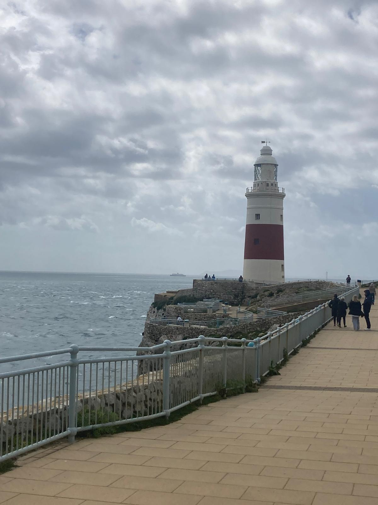
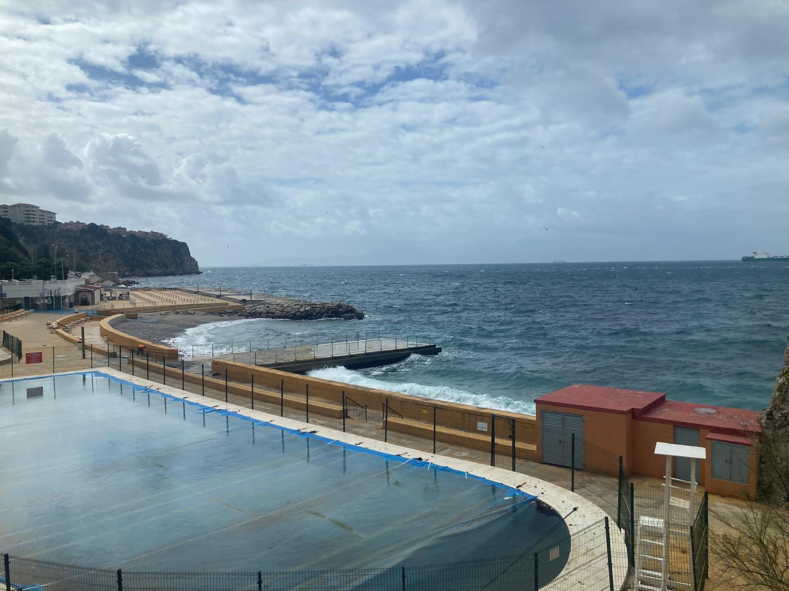
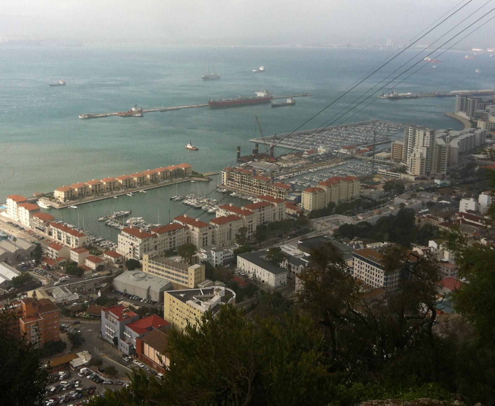
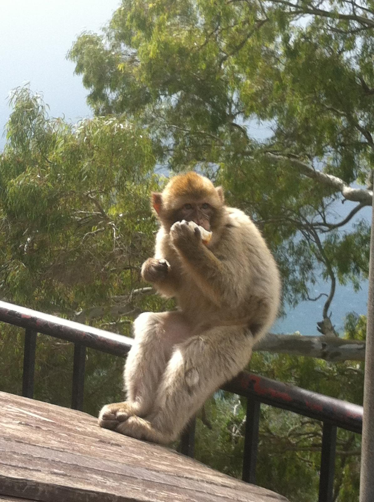
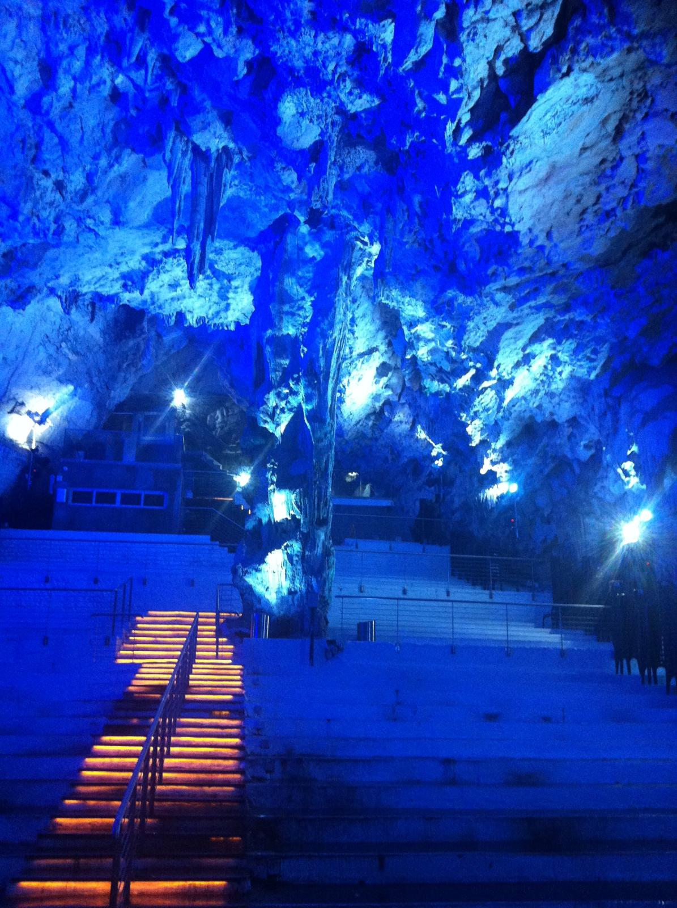
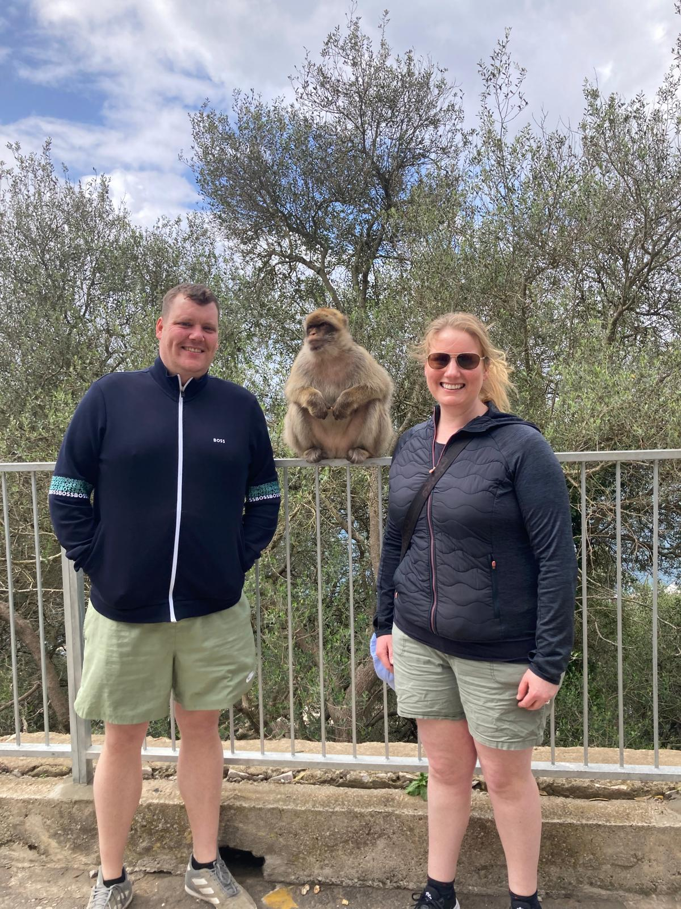

We have been to Gibraltar a couple of times — and it never gets less extraordinary. On our most recent visit in 2024, myself and Podge got the bus from Fuengirola with friends — about two hours along the Costa del Sol coast — and spent the day doing a full tour of the Rock. Barbary macaques, St Michael's Cave dramatically lit in blue, the Great Siege Tunnels, Europa Point looking across to Morocco and Main Street with its red phone boxes and British pubs. And then, arriving back at the border, the moment that always stops people in their tracks — the main road crossing an active airport runway. There is genuinely nowhere else like Gibraltar on earth.






Our Gibraltar highlights — watch before you visit!
I had been to Gibraltar before — once arriving by bus from Portugal, crossing the border on foot with the Rock filling the entire horizon ahead of me. But the 2024 visit with Podge and friends from Fuengirola was the most complete experience of the place. We got the bus from Fuengirola — about two hours along the Costa del Sol — crossed into Gibraltar on foot at the border and arranged a guided tour of the Upper Rock for the day.
The tour covered everything — the macaques on the Upper Rock, St Michael's Cave lit up in extraordinary blues, the Great Siege Tunnels carved through the limestone, Europa Point at the very southern tip of Europe with the coast of Morocco visible across the Strait, and the views from the top of the Rock over Spain, the Mediterranean and the Atlantic simultaneously. It is one of the most geographically dramatic viewpoints in the world.
And then there is Main Street — a pedestrianised British shopping street in the sunshine of southern Spain, complete with Gibraltar police in traditional uniforms, red phone boxes, British pubs and Marks & Spencer. The cultural collision never gets less surreal, no matter how many times you see it.
Winston Churchill Avenue — the main road into Gibraltar from Spain — crosses the active runway of Gibraltar International Airport at a level crossing. When a plane is landing or taking off, barriers come down, traffic stops, pedestrians wait and the plane passes a matter of metres in front of you. Then the barriers lift and everyone carries on as if nothing unusual has happened.
It is one of the most extraordinary and surreal transport arrangements in the world — and the people of Gibraltar treat it with complete nonchalance, because it has been this way for decades and they have simply got on with it. For a first-time visitor, standing at those barriers as an aircraft rolls past is a genuinely jaw-dropping moment. For a returning visitor, it is still brilliant every single time.
The airport was built on the flat land at the northern end of Gibraltar in the 1930s, and the road was already there. Rather than build a bridge or a tunnel, they simply put in a level crossing and agreed that the road would have right of way except when it didn't. Gibraltar being Gibraltar, this seemed entirely reasonable.
The Barbary macaques are the undisputed stars of any Gibraltar visit — the only wild primates in Europe, roaming freely across the Upper Rock with total confidence and absolutely zero interest in personal space. They will sit on your head, steal your sunglasses, investigate your bag and pose magnificently for photographs. Keep your belongings secure, do not feed them and enjoy every second of being completely ignored by animals that have been living on this Rock for centuries. Legend has it that if the macaques ever leave Gibraltar, British sovereignty over the territory will end — so they are looked after extremely well.
St Michael's Cave is one of the most atmospheric and beautiful natural sites in Gibraltar — a spectacular cavern inside the Rock with extraordinary stalactite and stalagmite formations lit in deep blues and purples. The lighting transforms the cave into something almost theatrical, and indeed it is used as a concert and performance venue — the acoustics inside the limestone cavern are extraordinary. It is one of those places that takes you completely by surprise with how impressive it is.
The Great Siege Tunnels are a network of military tunnels carved directly into the limestone of the Rock during the Great Siege of Gibraltar (1779–1783), when British and Hanoverian forces successfully defended the territory against a combined Spanish and French assault. The tunnels housed cannon emplacements that could fire on enemy positions below — an extraordinary feat of military engineering in extremely difficult conditions. Walking through them gives a vivid sense of what the defenders of the Rock endured.
Europa Point is the southernmost tip of Gibraltar — and on a clear day, standing there and looking south across the Strait of Gibraltar, you can see the coast of Morocco. Africa. Another continent, just 14 kilometres away. The Ibrahim-al-Ibrahim Mosque stands here — one of the largest mosques in Europe, facing Mecca and visible from across the Strait. The lighthouse, the views and the simple fact of standing at the very tip of Europe make Europa Point one of the most quietly extraordinary spots on the Rock.
The photographs do not prepare you for how dramatic St Michael's Cave actually is in person. The blue and purple lighting, the scale of the cavern, the thousands of stalactites and stalagmites — some of them enormous, some tiny and delicate — and the knowledge that you are inside a limestone Rock that has been hollowed out by water over millions of years makes the whole experience genuinely awe-inspiring.
The cave has been used as a field hospital, a shelter and a theatre over the centuries. Today it hosts concerts, classical music performances and cultural events — and if you ever get the chance to hear live music in St Michael's Cave, take it. The acoustics are remarkable.
Main Street is the pedestrianised commercial heart of Gibraltar and one of the most culturally surreal streets in Europe. Red phone boxes. A Marks & Spencer. British pubs serving pints of Guinness and fish and chips. Gibraltar police in traditional British-style uniforms. Price tags in pounds sterling. And outside, the Mediterranean sun, the Spanish mountains and the Rock towering overhead.
The duty-free shopping along Main Street is genuinely excellent — perfumes, electronics, alcohol and tobacco significantly cheaper than in Spain or the UK. Gibraltar has always been a shopping destination for Costa del Sol visitors and the range of shops along Main Street reflects that. But even if you buy nothing, simply walking the length of the street and soaking up the extraordinary cultural collision is worth the trip.
Catalan Bay on the eastern side of the Rock is worth a visit if you have time — a colourful little beach village that feels completely different to the rest of Gibraltar, tucked between the Rock and the Mediterranean with a small beach, fishing boats and a handful of restaurants.
Barriers come down. A passenger jet rolls past at eye level. Barriers go up. Traffic carries on. The most extraordinary level crossing in the world and Gibraltar treats it as completely routine. Jaw-dropping every single time.
Europe's only wild primates, completely uninterested in humans and absolutely convinced the Rock belongs to them. They sit on heads, steal sunglasses and pose magnificently for photographs. Brilliant, chaotic and completely unforgettable.
Dramatic stalactites lit in deep blue and purple inside a limestone cavern that doubles as a concert hall. Takes you completely by surprise with how spectacular it is. One of the great hidden gems of the Rock.
Standing at the southernmost tip of Europe and looking south to see the coast of Morocco — another continent, 14 kilometres away. One of those quiet geographical moments that properly puts the world in perspective.
Red phone boxes, Marks & Spencer and a pint of Guinness in Mediterranean sunshine with Africa visible across the water. The cultural collision of Gibraltar is endlessly surreal and endlessly fascinating.
Spain to the north, Morocco to the south, the Mediterranean to the east, the Atlantic to the west. The view from the top of the Rock is one of the most geographically remarkable viewpoints in the world.
A guided Rock tour is by far the best way to see Gibraltar properly — the macaques, the cave, the tunnels and Europa Point are all covered, with a guide who brings the history and the quirks of the place to life. Many tours also combine Gibraltar with a day in the Costa del Sol. TourRadar has great options.
Disclosure: This is an affiliate link. If you book through it we may earn a small commission at no extra cost to you.
Rock tours, cave visits, dolphin watching in the Strait of Gibraltar, cable car tickets and day trips from the Costa del Sol — book your Gibraltar experiences in advance, especially the guided Rock tours which fill up fast.
Disclosure: If you book through this link we may earn a small commission at no extra cost to you.
Klook has Gibraltar Rock tours, cable car experiences and day trip options from the Costa del Sol — great for booking individual activities around your visit.
Disclosure: This is an affiliate link. If you book through it we may earn a small commission at no extra cost to you.
Common questions
What to pack for Gibraltar
Gibraltar is a day trip destination from the Costa del Sol — light packing, comfortable shoes and sun protection are the essentials.
Note that Gibraltar uses its own mobile network — your Spanish SIM may not work inside Gibraltar. An eSIM with international data covers you seamlessly.
View on Amazon →The Upper Rock is exposed and the southern Spanish sun is strong — essential for a full day outdoors on the Rock.
View on Amazon →The Upper Rock tour involves steps, uneven paths and some climbing — proper shoes are essential. Flip flops will not manage it.
View on Amazon →A full day on the Rock means a lot of photos — keep your phone charged for the macaques, the cave and the runway crossing.
View on Amazon →The macaques are opportunistic — zipped bags and closed pockets are essential on the Upper Rock. They are quick and completely shameless.
View on Amazon →Disclosure: These are Amazon affiliate links. If you buy through them we may earn a small commission at no extra cost to you.
Gibraltar is the perfect add-on to a Costa del Sol holiday. Read our other nearby guides below.
Barcelona's Sagrada Família, the Bernabéu in Madrid, Fuengirola's gorgeous beach — our honest guide to Spain.
Read the Spain guide →Stunning monuments, brilliant gluten-free food and day trips to Sintra and Cascais from one of Europe's best cities.
Read the Lisbon guide →Visible from Europa Point across the Strait — Marrakech, the Atlas Mountains and the Sahara desert camp.
Read the Morocco guide →Get the bus from Fuengirola, cross the runway, book a Rock tour, watch the macaques steal someone's sunglasses, look south to Africa from Europa Point and have a pint in a British pub in Spain. Gibraltar is completely one of a kind.
Affiliate disclosure: if you book through our links we may earn a small commission at no cost to you. We only recommend experiences we've done ourselves.